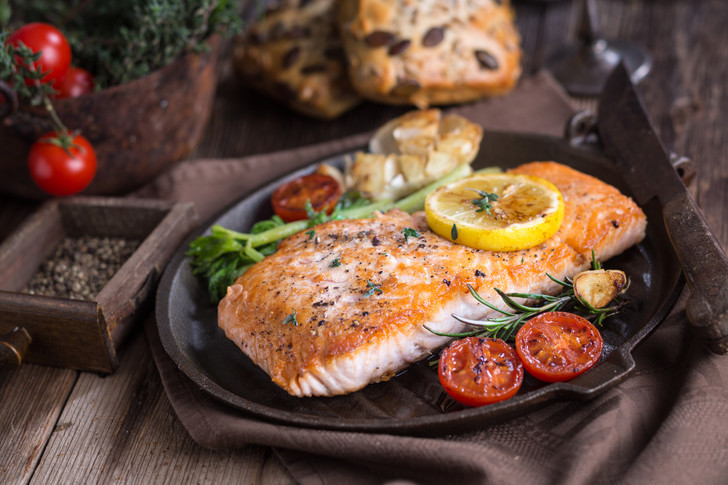
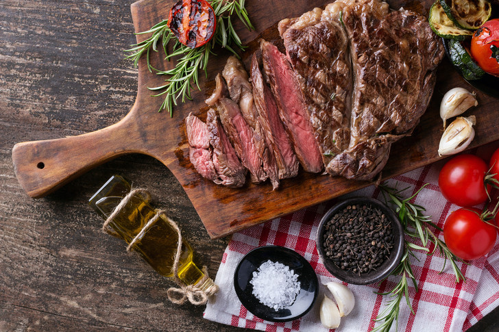

В мире пищевого разнообразия необходимо научиться готовить блюда так, чтобы не навредить здоровью. Питание — настолько важная часть нашей повседневной рутины, что напрямую влияет на настроение и самочувствие: пока одни продукты работают на благо работоспособности и энергичности, другие могут стать причиной развития тяжелого заболевания.
А для того, чтобы предотвратить появление недуга, важно следить за термообработкой каждого ингредиента. Есть такие продукты, которые настоятельно не рекомендуют употреблять в холодном виде. Да, остывшая еда не только теряет вкус и аромат, но и может вредить работе нашего организма.
-
1. Белковые продукты
Холодное мясо птицы и рыбы попадают в кишечник в непереваренном виде: остывший белок попросту не успевает расщепиться до аминокислот. Это приводит к различным неприятным ощущениям: например, к тяжести в животе или его вздутию. А регулярное потребление остывших, богатых протеином блюд грозит развитием тяжелой формы дисбактериоза.
 -
2. Все, приготовленное на масле
Любые крупы, овощи, мясо и рыбу на масле можно есть только в теплом виде. Остывшими они мешают правильному расщеплению жиров, что может стать причиной постоянного дискомфорта и болезненных ощущений в желудке.
-
3. Красное жирное мясо
Этот продукт при любом варианте приготовления переваривается тяжело, а его употребление в холодном виде — двойной удар по организму. Остывшее блюдо сразу попадает в тонкий кишечник (там происходит расщепление углеводов). Правда, оказывается оно там вместе с бактериями, которые препятствуют переработке пищи и негативно влияют на работу ЖКТ в целом.
 -
4. Супы
Зачастую суп готовится из животного белка и жиров. Даже если у вас постное блюдо, то вы все равно добавляете овощи, обжаренные на масле. А что мы говорили об остывших, обжаренных продуктах? Холодный суп — тяжелый труд для работы нашего ЖКТ.
Естественно, здесь не идет речь о летних и легких овощных супах. Было бы очень странно есть, например, окрошку, в горячем виде.
-
5. Смесь горячих ингредиентов с холодными
Понятное дело, что не все продукты обязательно нужно разогревать. Например, свежие овощи и фрукты можно просто достать из холодильника и подождать , пока они нагреются до комнатной температуры (примерно 30-40 минут). Однако сочетание холодных и горячих блюд провоцирует переедания. Дело в том, что притупляется чувство насыщения.